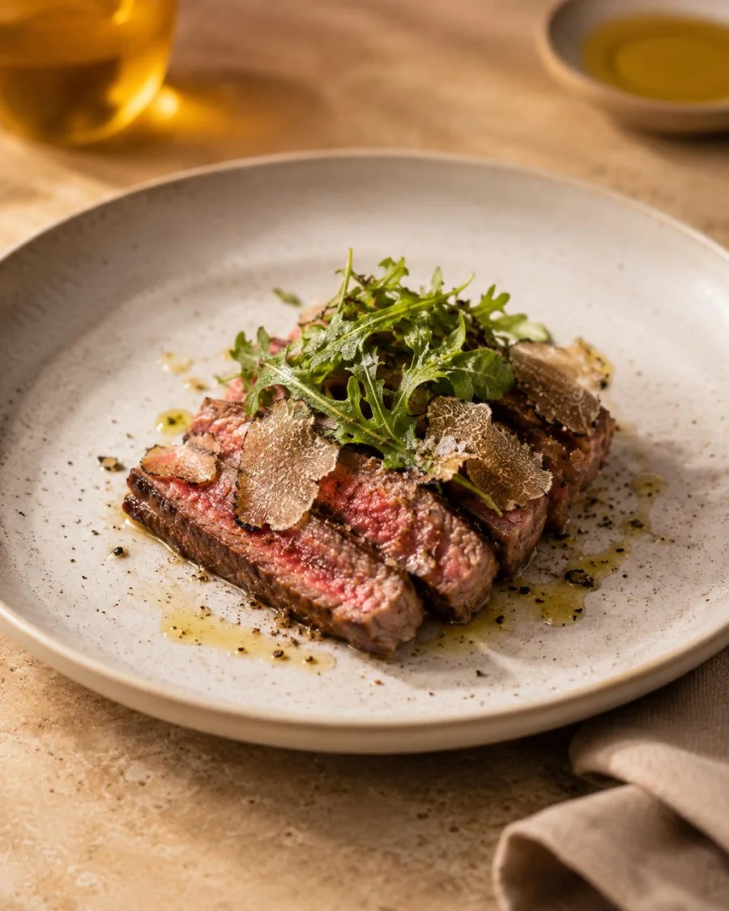
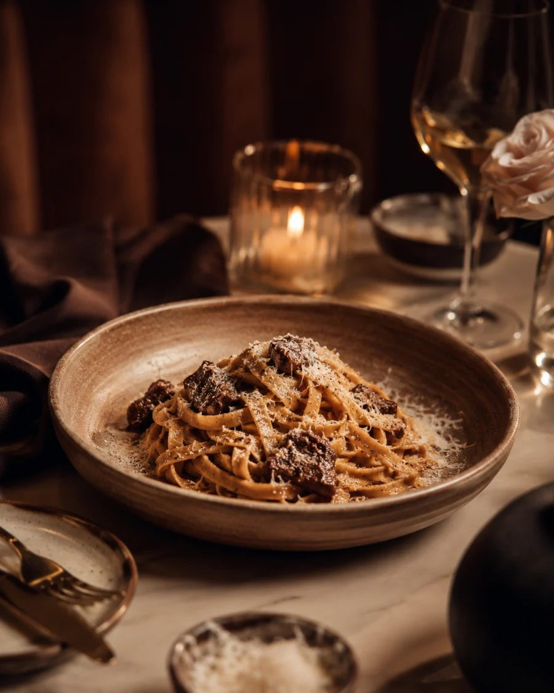
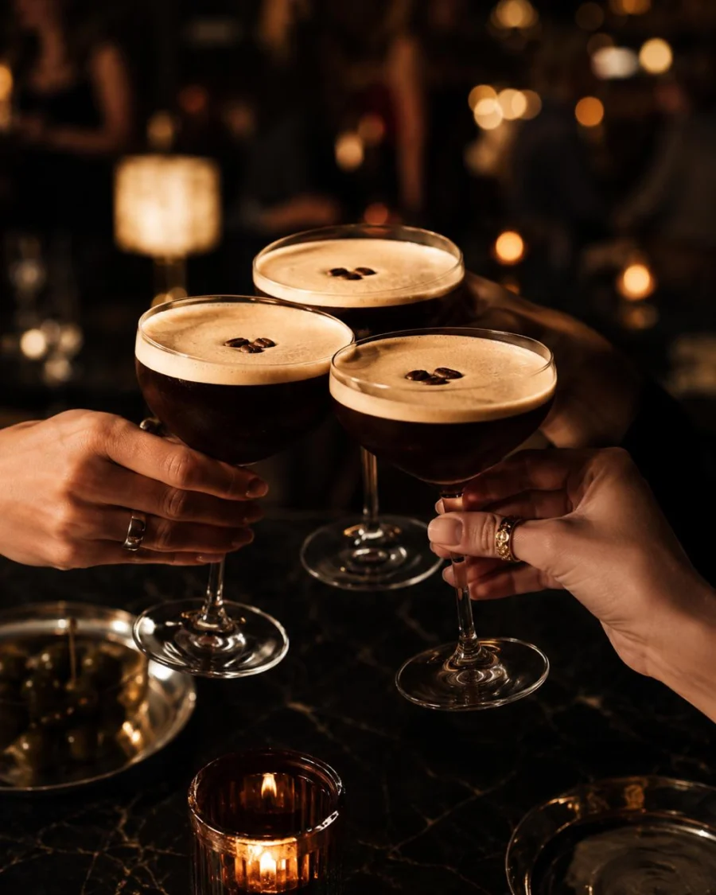

Scottsdale Italian Supper Club
AMANTI
Central Italian soul, candlelit cocktails, handmade pasta, and a room built for dinner to become the night.
Same Room. Stronger Story.
Not red-sauce nostalgia. Not a steakhouse costume. Amanti is Italian dining with after-dark gravity.
Built from warm woods, leather, brass, wine, textured walls, flattering light, and a bar that knows exactly what it is doing.
The food language is familiar and craveable: crudo, antipasti, handmade-style pastas, Roman-leaning pizzas, coastal seafood, grilled meats, truffle, herbs, olive oil, and dolce.

The Room
Leather, walnut, brass, linen, olive, candlelight.
The Table
Fresh, rich, coastal, fire-kissed, and built to share.




Dinner That Moves
Start with crudo and a martini. Stay for pasta, wine, and one more thing you were not planning to order.
Amanti is built for date nights, celebrations, private dinners, bar energy, and the late table that does not want the check yet.






After Dark
Aperitivo into supper. Supper into one more drink.
Low light, coupe glasses, wine, olives, music in the walls, and a room that gets better the later it gets.


Visit
Amanti Scottsdale
17797 N Scottsdale Rd
Scottsdale, AZ 85255
Reservations, opening hours, private dining, and launch events will be released soon.